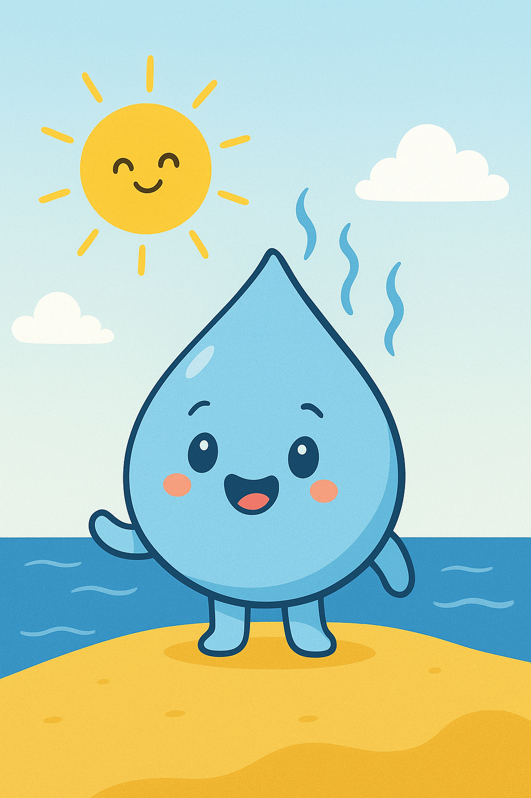
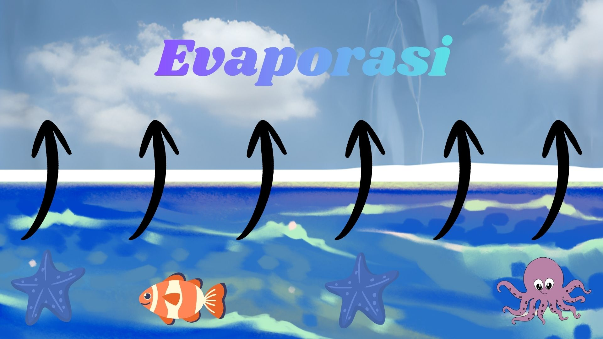
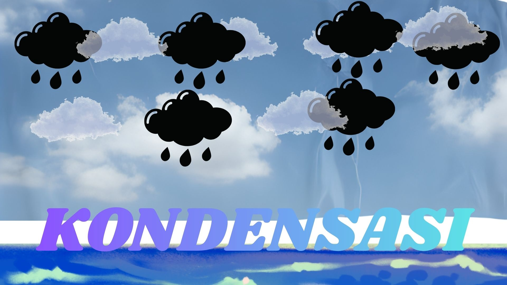
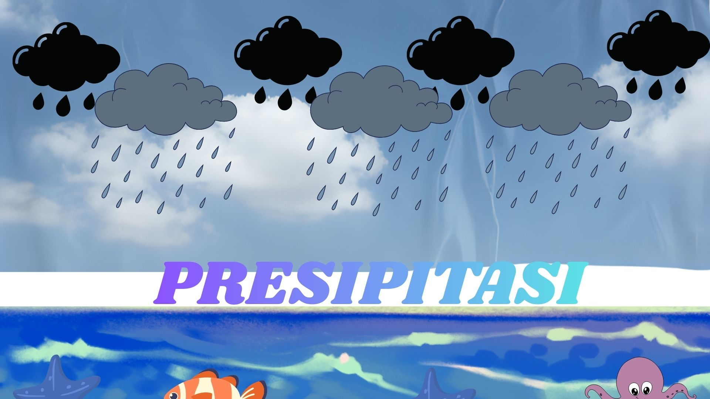
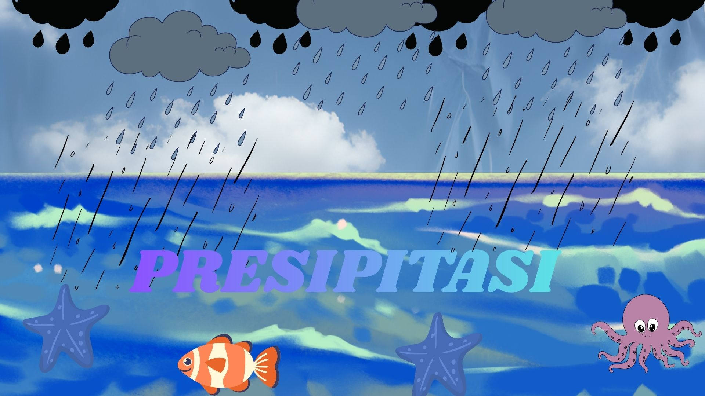

Halo! Saya adalah Tetes, sebuah molekul air kecil. Ikuti perjalanan saya yang tak pernah berakhir, yaitu **Siklus Hidrologi** atau **Siklus Air**. Perjalanan ini adalah proses alami pergerakan air dari bumi ke atmosfer dan kembali lagi ke bumi.
(Menunjukkan gambar Teti si Petualang Tetes Air)
Perjalanan saya dimulai di samudra atau sungai. Ketika Matahari memberikan energi panas, saya berubah wujud dari cair menjadi uap air (gas). Saya naik ke atmosfer! Proses penguapan dari permukaan air ini disebut **Evaporasi**.
(Menunjukkan proses menguapnya air laut)
Ketika saya mencapai ketinggian, suhu udara dingin membuat saya dan teman-teman uap air kehilangan energi dan berkumpul kembali menjadi tetesan air cair atau kristal es yang sangat kecil. Kami membentuk **Awan**! Proses ini adalah **Kondensasi**.
(Menunjukkan proses pembuatan awan)
Awan menjadi terlalu padat dan berat. Kami tidak bisa bertahan lagi di udara dan jatuh kembali ke bumi dalam berbagai bentuk seperti Hujan, Salju, atau Es. Ini adalah **Presipitasi** atau Curah Hujan.
(Menunjukkan kondisi hujan sedang turun)
Setelah mendarat, saya bisa mengalir di permukaan tanah menuju sungai atau laut (**Runoff**), atau meresap ke dalam tanah menjadi air tanah (**Infiltrasi**). Di sinilah saya terkumpul, siap untuk diuapkan lagi oleh Matahari, dan siklus pun berlanjut!
(menunjukkan air di permukaan dan kembali ke sumber)
Silakan klik pada jawaban yang Anda anggap benar!